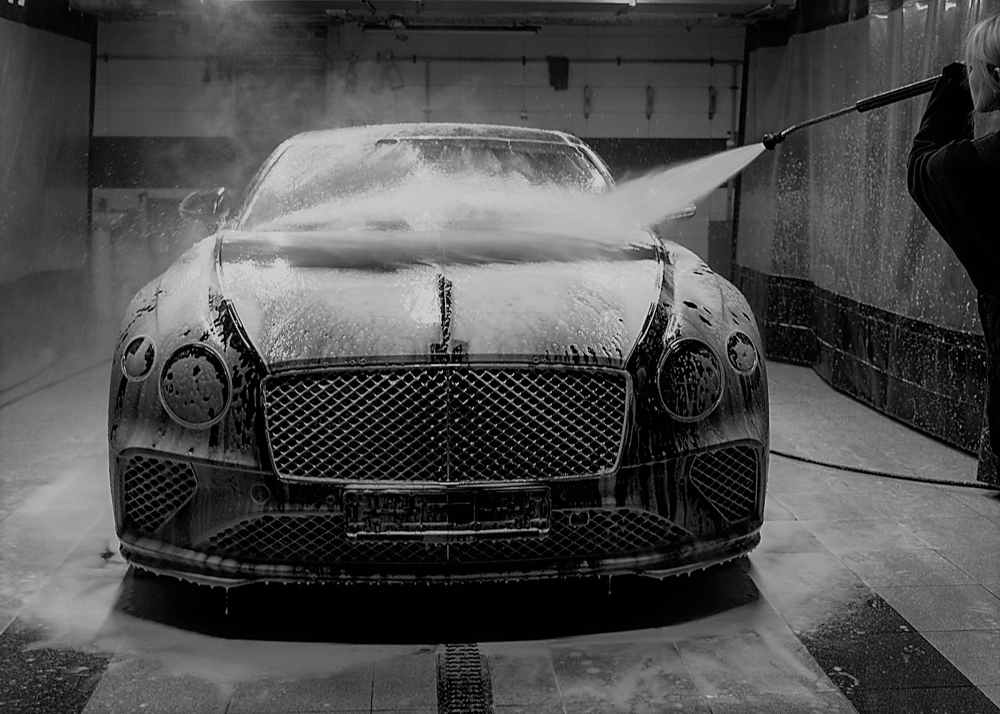
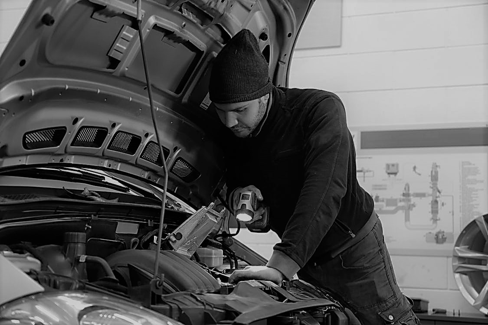

Le mot du directeur
Chers amis de V.Parrot,
Bienvenue sur notre site dédié aux amoureux de l'automobile ! Chez V.Parrot, nous sommes passionnés par les voitures, de la vente de véhicules d'occasion à l'entretien mécanique et carrosserie. Notre équipe dévouée met tout en œuvre pour vous offrir des services de qualité.
Explorez notre sélection de voitures d'occasion fiables et découvrez nos services professionnels. Nous sommes là pour rendre votre expérience automobile agréable et sans tracas.
Merci de faire partie de la famille V.Parrot.
Bien à vous,
Directeur, V.Parrot Garage Auto
|  |
Service CarrosserieRedonnez à votre véhicule son allure d'origine avec les services de carrosserie de V.Parrot Garage Auto. Notre équipe dédiée de carrossiers experts s'engage à traiter tout, des petites éraflures aux réparations complexes après un accident. Offrez à votre voiture une seconde jeunesse avec notre expertise en restauration esthétique et structurelle. |
Service MécaniqueChez V.Parrot Garage Auto, nos services mécaniques vont au-delà de l'entretien routinier. Nos techniciens expérimentés veillent à la santé de votre véhicule en proposant des diagnostics avancés, des réparations efficaces, et un entretien préventif. Faites-nous confiance pour maintenir votre voiture en excellent état de fonctionnement. |
 |
Avis clients
Nos clients recommandent
Laissez votre avis
Nos horaires
Lundi: Fermé
Mardi: 09h00-12h00/13h00-17h00
Mercredi: 09h00-12h30
Jeudi: 09h00-12h00/13h00-17h00
Vendredi: 09h00-12h00/13h00-17h00
Samedi: 09h00 - 18h00
Dimanche : Fermé